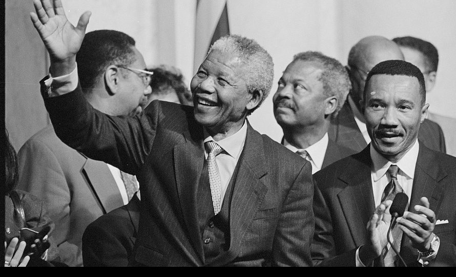

Nelson Mandela
A South African anti-apartheid revolutionary, political leader and philanthropist

Mandela’s Fight for Freedom in South Africa
Here's a time line of Nelson Mandela:
- 1918 - Born Rolihlahla Mandela at Mvezo in the Transkei
- 1925 - Attends primary school near Qunu (receives the name ‘Nelson’ from a teacher)
- 1934 - Undergoes initiation; Attends Clarkebury Boarding Institute in Engcobo
- 1937 - Attends Healdtown, the Wesleyan College at Fort Beaufort
- 1939 - Enrols at the University College of Fort Hare, in Alice
- 1941 - Escapes an arranged marriage; becomes a mine security officer; starts articles at the law firm Witkin, Sidelsky & Eidelman
- 1942 - Completes BA through the University of South Africa (UNISA)
- 1948 - Elected national secretary of the ANCYL
- 1951 - Elected President of the ANCYL
- 1958 - Divorces Evelyn Mase; Marries Nomzamo Winnie Madikizela – they have two daughters: Zenani (1959) and Zindzi (1960)
- 2003 - Establishes the Mandela Rhodes Foundation
- 1918 - Born Rolihlahla Mandela at Mvezo in the Transkei
- 2008 - Asks future generations to continue the fight for social justice, 18 july turns 90 years old.
- 2010 - Formally presented with the Fifa World Cup trophy before it embarks on a tour of South Africa
- 2013 - Spends New Year’s Day with members of his family in Johannesburg
- 2013 - 5 December, Passes away at home in Johannesburg
One of the most difficult things is not to change society - But
to change yourself
- Nelson Mandela